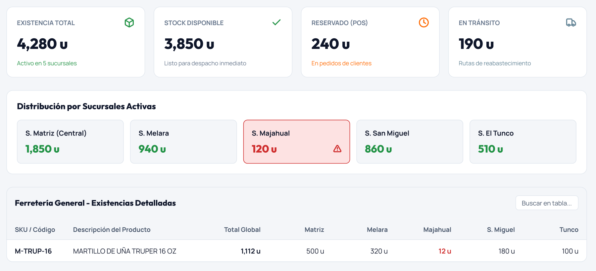
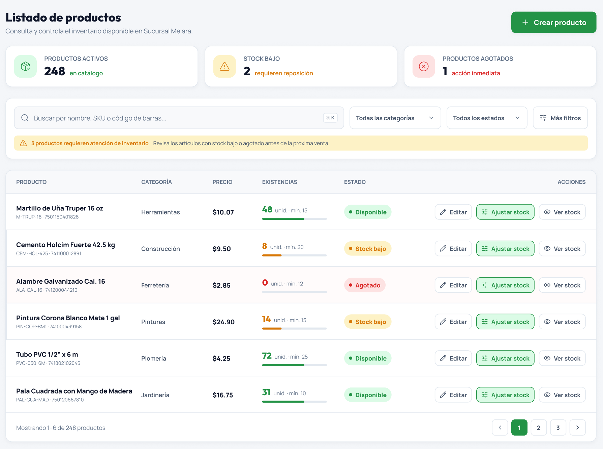

Información centralizada
Reunir los datos de clientes, productos y usuarios en un mismo entorno facilita su consulta y actualización.
Clientes, productos y personas. La información que necesitas para gestionar tu negocio, en un solo lugar.
Una visión completa de las áreas clave del negocio.


Atender a un cliente, revisar un producto o gestionar un acceso no debería implicar buscar información en distintos lugares.
Conecta CRM, inventario y administración para mantener una visión organizada de las áreas clave del negocio.
Explora las herramientas para clientes, inventario y administración.
Una ficha centralizada permite organizar la información general, comercial y de contacto para facilitar la consulta y el seguimiento.
De la ficha del cliente al control de accesos: conoce las pantallas de los tres módulos.
El video muestra diseños de interfaz y datos ilustrativos; no es una grabación de operaciones reales.
Información organizada para facilitar las tareas diarias y tomar decisiones con mayor claridad.
Reunir los datos de clientes, productos y usuarios en un mismo entorno facilita su consulta y actualización.
Consultar existencias por sucursal y detectar niveles bajos ayuda a identificar necesidades de abastecimiento.
Definir roles y permisos permite distribuir las funciones según las responsabilidades de cada usuario.
Mantener fichas de clientes ordenadas facilita localizar información y dar continuidad a la atención.